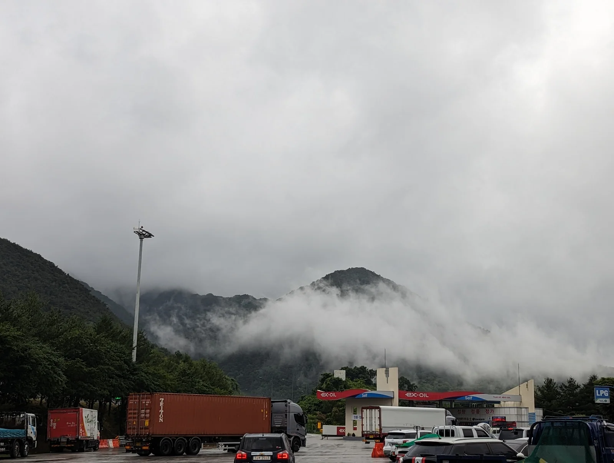
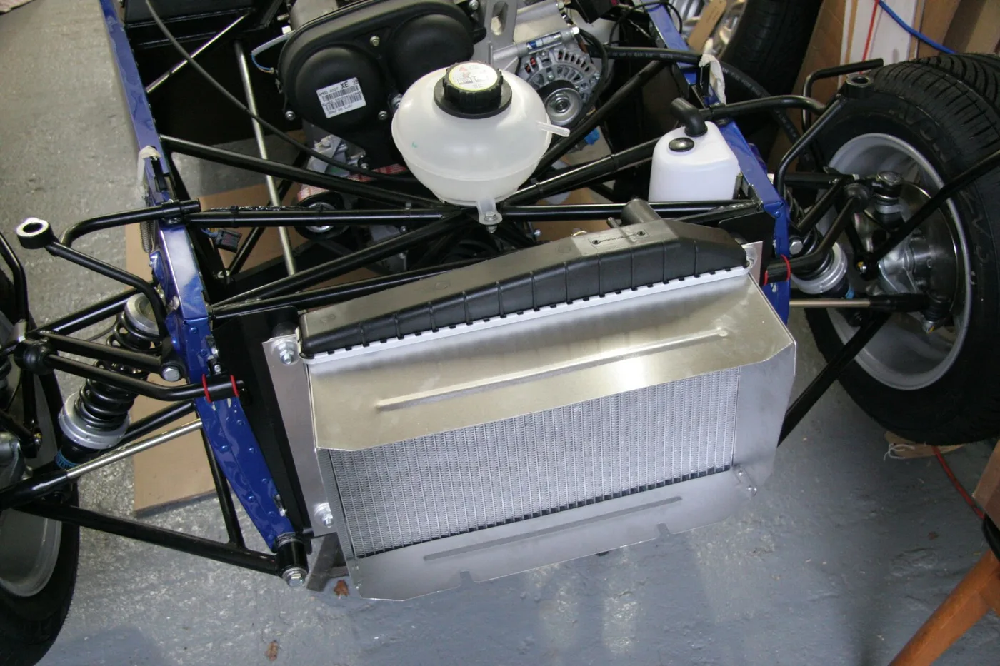
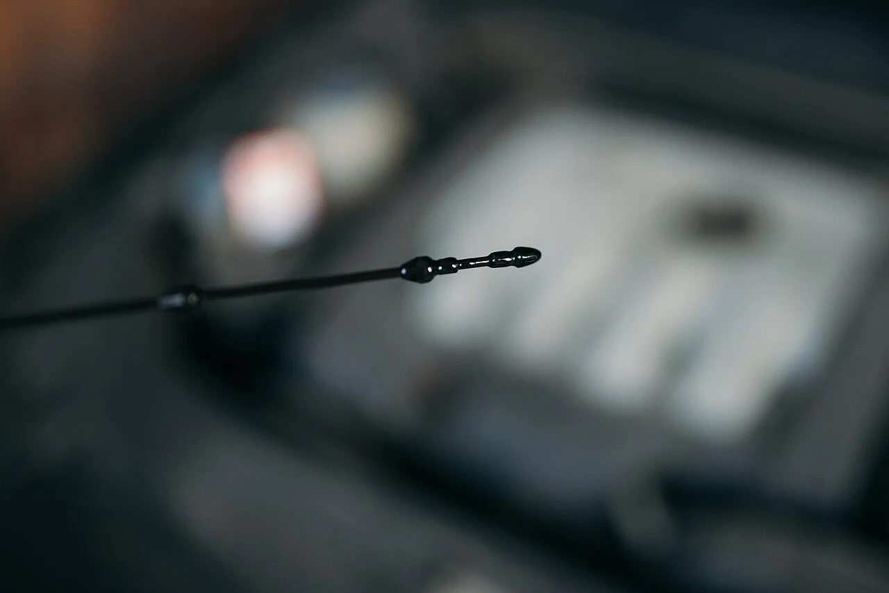

▲ 10월 4일부터 7일까지 나흘간 고속도로 통행료가 면제된다 ⓒ Wikimedia Commons
추석 귀성길에서 가장 힘든 것은 거리가 아닙니다.
정체입니다.
평소 3시간이면 갈 길이 7시간이 됩니다. 그 시간 동안 차는 저속 주행과 공회전을 반복합니다. 엔진과 냉각계에 가장 부담이 큰 조건입니다.
1. 통행료 면제 — 기간과 조건
| 항목 | 내용 |
|---|---|
| 기간 | 10월 4일 0시 ~ 10월 7일 24시 |
| 대상 도로 | 한국도로공사 관리 전 고속도로 |
| 대상 차량 | 모든 차량 — 자가용·승합차·화물차 구분 없음 |
| 신청 | 필요 없음 — 자동 적용 |
📍 헷갈리기 쉬운 부분 — 진입·진출 시각
진입과 진출 중 한쪽만 면제 기간에 걸려도 전액 면제됩니다. 예를 들어 10월 3일 밤 11시에 진입해 4일 새벽 1시에 나오면 면제이고, 7일 밤 11시에 진입해 8일 새벽에 나와도 면제입니다. 걸치기만 하면 됩니다.
하이패스 차량은 그대로 통과하면 됩니다. 요금이 0원으로 처리됩니다. 일반 차로 이용 시에는 통행권을 뽑고 출구에서 제출하는 절차가 그대로 유지됩니다.

▲ 하이패스는 그대로 통과하면 0원으로 처리된다 ⓒ Wikimedia Commons
2. 타이어 — 정체 구간에서 가장 먼저 티가 난다
장거리 주행 전 점검 1순위는 타이어입니다.
| 항목 | 기준 |
|---|---|
| 마모 한계 | 트레드 깊이 1.6mm — 마모 한계선(▲ 표시) 확인 |
| 공기압 | 운전석 도어 안쪽 스티커 기준 |
| 측면 손상 | 부풀음(허니아)·갈라짐 확인 |
| 제조주차 | 측면 4자리 숫자 — 오래되면 경화 |
✅ 짐을 많이 싣는다면 공기압을 올리세요
· 도어 스티커에는 보통 일반 하중과 최대 하중 두 가지 값이 적혀 있습니다
· 가족 전원 탑승 + 트렁크 가득이면 최대 하중 기준이 맞습니다
· 공기압이 낮은 상태로 무겁게 달리면 측면 변형이 커지고 발열이 심해집니다
타이어 옆면 표기를 읽는 법은 타이어 사이드월 표기 완전정리에서 자세히 다뤘습니다.

▲ 트레드 홈 안의 돌출부가 마모 한계선이다. 이 높이까지 닳으면 교체해야 한다 ⓒ Wikimedia Commons
3. 냉각수 — 정체가 만드는 진짜 위험
고속 주행보다 정체 구간이 냉각계에 더 가혹합니다.
📍 왜 막힐 때 더 뜨거운가
달릴 때는 주행풍이 라디에이터를 식혀줍니다. 정체 구간에서는 그 바람이 없습니다. 냉각팬만으로 버텨야 하는데, 여기에 에어컨까지 계속 돌아갑니다. 냉각수가 부족하거나 오래됐다면 이 상황에서 문제가 드러납니다.
| 항목 | 확인 방법 |
|---|---|
| 양 | 보조 탱크의 MIN~MAX 사이인지 확인 |
| 색 | 탁하거나 갈색이면 교환 시기 |
| 누수 | 주차 자리 바닥에 초록·분홍 자국이 있는지 |
| 주의 | 엔진이 뜨거울 때 캡을 열지 말 것 |
마지막 항목은 안전 문제입니다. 냉각계는 압력이 걸려 있어서, 뜨거운 상태에서 캡을 열면 끓는 냉각수가 분출합니다. 반드시 식힌 뒤 열어야 합니다.

▲ 보조 탱크 눈금이 MIN과 MAX 사이에 있는지 확인한다 ⓒ Wikimedia Commons
4. 나머지 세 가지 — 오일·와이퍼·배터리
| 항목 | 확인 포인트 |
|---|---|
| 엔진오일 | 딥스틱 F와 L 사이 · 색이 지나치게 검으면 교환 검토 |
| 와이퍼 | 가을비 대비 — 줄이 생기거나 소리가 나면 교체 |
| 배터리 | 여름 폭염을 지난 뒤 성능이 떨어져 있을 수 있음 |
📍 배터리는 겨울에만 문제가 아닙니다
배터리는 더위에 더 빨리 늙습니다. 고온에서 내부 화학 반응이 빨라져 수명이 줄기 때문입니다. 다만 증상은 기온이 떨어질 때 나타납니다. 여름을 막 지난 지금이 점검하기 좋은 시점입니다.

▲ 오일량은 딥스틱의 F와 L 사이에 있어야 한다 ⓒ Wikimedia Commons
5. 운전 중에 지켜야 할 것
✅ 정체 구간 운전 요령
· 2시간마다 휴식 — 졸음은 예고 없이 옵니다
· 에어컨 내기순환을 계속 쓰지 말 것 — 실내 이산화탄소가 쌓여 졸음을 부릅니다
· 수온계를 가끔 확인 — 평소보다 높으면 에어컨을 잠시 끄고 상황을 봅니다
· 연료는 절반 이하로 떨어지기 전에 보충 — 정체 중 주유소 진입이 어려울 수 있습니다
· 2차 사고 주의 — 갓길에 정차했다면 반드시 가드레일 밖으로 대피합니다
두 번째 항목을 특히 강조하고 싶습니다. 내기순환은 냉방 효율이 좋지만, 밀폐된 실내에 사람이 여럿 타고 있으면 이산화탄소 농도가 빠르게 올라갑니다. 30분~1시간마다 외기 모드로 바꿔 환기해야 합니다.
졸음운전 대처는 커피 낮잠 활용법에서 따로 정리했습니다.
6. 정리
2026년 추석 연휴 고속도로 통행료는 10월 4일 0시부터 7일 24시까지 면제됩니다. 모든 차량이 대상이고 신청은 필요 없으며, 진입·진출 중 한쪽만 걸쳐도 전액 면제됩니다.
점검 순서는 타이어 → 냉각수 → 오일·와이퍼·배터리입니다. 특히 냉각수는 고속 주행보다 정체 구간에서 문제가 드러납니다.
운전 중에는 2시간마다 휴식과 주기적인 환기가 핵심입니다. 내기순환만 계속 쓰면 졸음이 빨리 옵니다. 출발 전 30분이 도착 시간을 바꾸지는 못해도, 중간에 멈춰 서는 일은 막아줍니다.